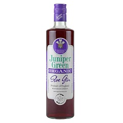
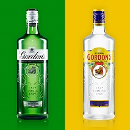

The European Union divides Gin into 4 distinct categories.
Juniper-flavored spirit drinks:
Spirit drinks that are produced by flavoring ethyl alcohol from agricultural origin, grain spirit and/or grain that has been distilled with Common Juniper berries. Any drink must meet a minimum strength of 30% ABV and have been made with natural or similar flavoring substances, provided that juniper be the dominant tasting flavor.
Gin:
Gin, as simply defined by the EU, must be made by from ethyl alcohol from agricultural origins, flavord with Common Juniper. Must meet a minimum of 37.5% ABV and again may be flavored with either natural or similar substances, so long as the dominant flavor tasted is juniper.
Distilled Gin:
Distilled Gin can meet the requierments in of two ways:
- Redistilling Juniper-flavored spirit drinks, that meet an initial ABV of 96%, in Gin stills with Common Juniper berries
- Be the product of similar distillation methods and grain base, meet the minimum ABV and the flavoring be predominantly Juniper.
London Gin:
London Gin, while being a type of distilled gin, has differences to it that has led it to be classed as it's own categories. At first, it follows the distilling method for Distilled Gin, but after redistilling, meets 76% ABV and contains no other added ingredients other than water, does not contain any added sugar other than 0.1 grams per liter and meets a minimum 37.5% ABV. It is the only gin that may be labeled with "dry".